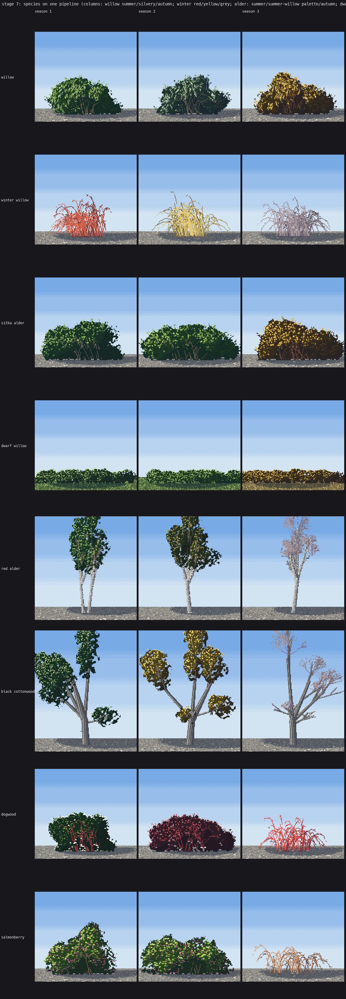

10. Other plants on the same machine
Back to the tutorial. Code: code/species.py, riparian and clustered in code/stage7.py. Species notes from the naturalist's riparian guide, ~/work/naturalist/plants/04-riparian.md.
Once the willow worked, each new plant was a change of three things: the form (the skeleton), the mark, and the palette. The clump grammar, value plan, edge, level of detail, contact, shadow and depth bands never changed.

Eight plants, three seasons each.
Leafless shrubs: layer the stems by depth
A leafless willow is only its wands and twigs, as clean runs. With one value it's a solid coloured blob. It reads only when stems are layered by depth: back wands one step down (seen through the front ones), front sun-facing wands lit, the rest mid:
# species.paint_winter
zf = np.mean(pts[:, 2]) / max(W_ * 0.3, 1) # -1 back .. +1 front
if zf < -0.25:
base_s = 1
elif lean * (-lx) < 0 and zf > -0.05:
base_s = 3
else:
base_s = 2
Twigs are short runs off the upper 60% of each wand, angled up 12–28°. Red-osier dogwood in winter is the same function with a stiffer, more upright fan (splay 30°, almost no droop) and a red twig ramp; salmonberry is a looser, drooping fan with an orange-brown one.
Broadleaf shrubs: the other mark
Alders and dogwood have oval leaves, so they use the lozenge from my Ferrari C1 copy instead of the spray (broadleaf_marks): a lit upper half, a one-step-darker lower half, a dark tuck under 50%, painted dim to bright, on the same clump field. paint_willow(..., p=dict(broadleaf=...)) switches the mark.
Two plants in leaf can share the mark and still differ by habit:
- dogwood: a dense closed dome of small leaves (clumps 3.5–6% of the width, aspect 1.0), dark green, red twigs showing through, flat white flower heads;
- salmonberry: an open thicket of arching canes (droop 0.75), big leaves held flat in tiers (clumps 2.2× wider than tall with a strong dark band,
vb=3.4), pale yellow-green, sky between the tiers.
Trees: a skeleton that pretends to be wands
TreeCrown subclasses WillowBush and builds a recursive 3-D limb skeleton instead of a fan. Each limb is stored as a "wand" (15 points), so wand_dirs, the clump layout, the marks and the visible-wand pass all work unchanged; lobes sit only on the outer limb generations, with one sub-crown per main limb.
# species.TreeCrown.__init__ (abridged)
for li in range(nl):
u = rng.uniform(0, 1) if low > 0 else 1.0
f = 1 - low * (1 - u) # where on the trunk the limb leaves
base = np.array([cx + lean * th * f, gy - th * f, 0.0])
if rng.random() < hang_p and f > 0.75: # only high limbs hang; low ones would float
tilt = np.radians(rng.uniform(70, 105))
...
self._grow(base, tilt, az, L0, W * 0.07, 1, depth, li, rng, spread, lobe_r, gap, ragged)
if leader:
self._grow(top, np.radians(rng.uniform(0, 8)), ...) # the central stem carries on through the crown
Two rules the skeleton needed, each found as a failure:
- hanging limbs only from the top quarter of the trunk (from low down they make a bonsai with clumps floating near the ground);
- a child branch can't droop more than its parent or 77° (twigs turned downward).
Black cottonwood: a leader through a tall open crown, limbs leaving over the upper third, a third of the high limbs leaving flat and drooping (the ragged lower crown), 22% of the lit leaves silver (they flutter). Red alder: a pale lichened trunk leaning up to ±0.15, many short upright limbs from the very top, a narrow irregular oval.
Bark (paint_trunk) steps across the limb from lit side to shadow side, with each handover a 2×2 checker band that never skips a step (the rule the broadleaf student read from Ferrari's V30 trunks). Cottonwood adds vertical furrows with a lit ridge on the sun side of each; alder adds white lichen pixels and dark lenticel dashes.
Two bugs to avoid when rasterising limbs: let the first painter of a pixel keep it (limbs painted over the trunk put their lit side across it as a white band at every junction), and oversample each segment 2× (one sample per pixel of length skips rows on a leaning segment).

The first cottonwoods, with a pale band across each trunk.
Bare crowns: fork, don't fan
The wand fan made brooms and feather dusters for bare trees however I set it. A recursive fork works: 5–7 main branches, each forking 2–3 ways, shorter (0.55–0.75×) and more spread each generation, clipped to an oval; the last generation sprays single twig pixels (a two-step dither between twig and sky, "too fine to draw").
def branch(x, y, ang, length, gen):
ex, ey = x + np.cos(ang) * length, y + np.sin(ang) * length
... # shorten until inside the oval
for (px, py) in clean_line(x, y, ex, ey): put(px, py, s)
if gen >= depth:
for _ in range(int((6 + 2 * length) * haze)): # the twig haze
...
return
for i in range(int(rng.integers(2, 4))):
a = ang + rng.uniform(-0.75, 0.75) - 0.15 * np.sin(ang)
branch(ex, ey, a, length * rng.uniform(0.55, 0.75), gen + 1)
Keep the haze thin (35%) and only on the second limb generation, or the crown becomes a mauve cloud; drooping limbs get none (they made floating flags).


Bare alders as feather dusters, then as a mauve cloud, before the fork was tuned.

Bare alders as lace over white trunks, red dogwood and orange salmonberry along the bank.
A mixed river
stage7.riparian stacks them as guide 04 describes the 100 m view of a west-side gravel-bed river: ragged cottonwoods behind, a lower wall of alder in groves, dogwood and salmonberry at the bank toe, willow scrub on the bar, then the channel and near gravel. Each plant group wears its own palette (how-to 6), and each stand is clustered (how-to 8).

Still short
A lone cottonwood reads as one only on good seeds; on others it's a broad generic tree. The single red alder is still regular. The dwarf willow is a low hedge rather than a mat draped over rock. Sitka alder is a broadleaf willow, not its own sprawling J-stemmed habit.